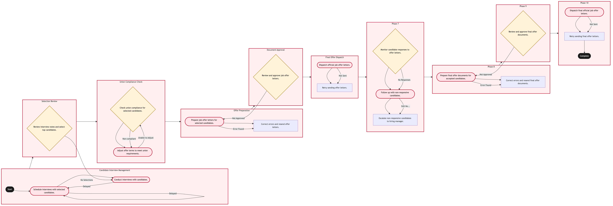

Updated 2026-08-21
Interview Selection and Offer Management
Process flow
Click to zoom

Process steps
▼
Phase 1 — Candidate Interview Management
2 steps
| Step | Activity | Role | System | Input | Output | KPI | Dec | Exc | Pain point |
|---|---|---|---|---|---|---|---|---|---|
| 1.1 | Schedule interviews with selected candidates. | Recruitment Coordinator | Phenom, DayforceU | List of candidates from initial screening | Scheduled interview times and locations | Interviews scheduled within 2 working days | N | Y | Complex scheduling conflicts due to union rules. |
| 1.2 | Conduct interviews with candidates. | HR Interviewer | Microsoft 365, PhenomU | Scheduled interview times and locations | Interview notes and candidate assessments | 90% of interviews completed on time | N | Y | Delays in scheduling due to union conflicts. |
▼
Phase 2 — Selection Review
1 steps
| Step | Activity | Role | System | Input | Output | KPI | Dec | Exc | Pain point |
|---|---|---|---|---|---|---|---|---|---|
| 2.1 | Review interview notes and select top candidates. | HR Manager | Phenom, Microsoft 365U | Interview notes and candidate assessments | List of selected candidates | Selection process completes within 4 working days | Y | N | Difficulties in selecting candidates due to high standards. |
▼
Phase 3 — Union Compliance Check
2 steps
| Step | Activity | Role | System | Input | Output | KPI | Dec | Exc | Pain point |
|---|---|---|---|---|---|---|---|---|---|
| 3.1 | Check union compliance for selected candidates. | Union Compliance Officer | Dayforce, SAP S/4HANAU | List of selected candidates | Compliance report | 100% compliance check completion within 5 working days | Y | N | Complex union rules and interpretation. |
| 3.2 | Adjust offer terms to meet union requirements. | Union Compliance Officer | SAP S/4HANA, PhenomU | Compliance report | Adjusted offer terms | 95% of compliance adjustments made within 2 working days | N | Y | Time-consuming negotiations with union representatives. |
▼
Phase 4 — Offer Preparation
2 steps
| Step | Activity | Role | System | Input | Output | KPI | Dec | Exc | Pain point |
|---|---|---|---|---|---|---|---|---|---|
| 4.1 | Prepare job offer letters for selected candidates. | HR Offer Specialist | Microsoft 365, SAP S/4HANAU | Adjusted offer terms | Drafted offer letters | 90% of offer letters prepared within 3 working days | N | Y | Ensuring accurate financial details in offer letters. |
| 4.2 | Correct errors and resend offer letters. | HR Offer Specialist | Microsoft 365, SAP S/4HANAU | Drafted offer letters with errors | Corrected offer letters | 90% of corrected offer letters sent within 1 working day | N | N | Multiple rounds of corrections required. |
▼
Phase 5 — Document Approval
1 steps
| Step | Activity | Role | System | Input | Output | KPI | Dec | Exc | Pain point |
|---|---|---|---|---|---|---|---|---|---|
| 5.1 | Review and approve job offer letters. | HR Manager | Microsoft 365, SAP S/4HANAU | Drafted offer letters | Approved offer letters | 100% of offer letters approved within 2 working days | Y | N | Delays in approval due to HR backlogs. |
▼
Phase 6 — Final Offer Dispatch
2 steps
| Step | Activity | Role | System | Input | Output | KPI | Dec | Exc | Pain point |
|---|---|---|---|---|---|---|---|---|---|
| 6.1 | Dispatch official job offer letters. | HR Offer Specialist | Microsoft 365, SAP S/4HANAU | Approved offer letters | Sent offer letters | 90% of offers sent within 1 working day | N | Y | Delays in email dispatch due to system outages. |
| 6.2 | Retry sending offer letters. | HR Offer Specialist | Microsoft 365, SAP S/4HANAU | Approved offer letters that failed to send | Resent offer letters | 90% of retried offers sent within 1 working day | N | N | Multiple retries required for some candidates. |
▼
Phase 7 — Phase 7
3 steps
| Step | Activity | Role | System | Input | Output | KPI | Dec | Exc | Pain point |
|---|---|---|---|---|---|---|---|---|---|
| 7.1 | Monitor candidate responses to offer letters. | Recruitment Coordinator | Phenom, Microsoft 365U | Sent offer letters | Candidate responses | 90% of responses received within 1 week | Y | N | Low response rates due to candidate availability issues. |
| 7.2 | Follow up with non-responsive candidates. | Recruitment Coordinator | Phenom, Microsoft 365U | Non-responsive candidate list | Follow-up responses | 90% of follow-ups completed within 1 week | N | Y | Candidates not responding to multiple attempts. |
| 7.3 | Escalate non-responsive candidates to hiring manager. | Recruitment Coordinator | Phenom, Microsoft 365U | Non-responsive candidate list | Escalation report | 100% of escalations completed within 2 working days | N | N | High-level management involvement required to secure candidates. |
▼
Phase 8 — Phase 8
2 steps
| Step | Activity | Role | System | Input | Output | KPI | Dec | Exc | Pain point |
|---|---|---|---|---|---|---|---|---|---|
| 8.1 | Prepare final offer documents for accepted candidates. | HR Offer Specialist | Microsoft 365, SAP S/4HANAU | Accepted candidate list | Final offer documents | 90% of final offer documents prepared within 3 working days | N | Y | Complex document preparation due to union rules. |
| 8.2 | Correct errors and resend final offer documents. | HR Offer Specialist | Microsoft 365, SAP S/4HANAU | Final offer documents with errors | Corrected final offer documents | 90% of corrected offer documents sent within 1 working day | N | N | Multiple rounds of corrections required. |
▼
Phase 9 — Phase 9
1 steps
| Step | Activity | Role | System | Input | Output | KPI | Dec | Exc | Pain point |
|---|---|---|---|---|---|---|---|---|---|
| 9.1 | Review and approve final offer documents. | HR Manager | Microsoft 365, SAP S/4HANAU | Final offer documents | Approved final offer documents | 100% of final offer documents approved within 2 working days | Y | N | Delays in approval due to HR backlogs. |
▼
Phase 10 — Phase 10
2 steps
| Step | Activity | Role | System | Input | Output | KPI | Dec | Exc | Pain point |
|---|---|---|---|---|---|---|---|---|---|
| 10.1 | Dispatch final official job offer letters. | HR Offer Specialist | Microsoft 365, SAP S/4HANAU | Approved final offer documents | Sent final offer letters | 90% of offers sent within 1 working day | N | Y | Delays in email dispatch due to system outages. |
| 10.2 | Retry sending final offer letters. | HR Offer Specialist | Microsoft 365, SAP S/4HANAU | Approved final offer documents that failed to send | Resent final offer letters | 90% of retried offers sent within 1 working day | N | N | Multiple retries required for some candidates. |
Swim lanes
Recruitment Coordinator1.1 7.1 7.2 7.3
HR Interviewer1.2
HR Manager2.1 5.1 9.1
Union Compliance Officer3.1 3.2
HR Offer Specialist4.1 4.2 6.1 6.2 8.1 8.2 10.1 10.2
Systems touched
Phenom, DayforceUMicrosoft 365, PhenomUPhenom, Microsoft 365UDayforce, SAP S/4HANAUSAP S/4HANA, PhenomUMicrosoft 365, SAP S/4HANAU
Key performance indicators
- Interviews scheduled within 2 working days
- 90% of interviews completed on time
- Selection process completes within 4 working days
- 100% compliance check completion within 5 working days
- 95% of compliance adjustments made within 2 working days
Risks and control points
- Complex scheduling conflicts due to union rules.
- Delays in scheduling due to union conflicts.
- Difficulties in selecting candidates due to high standards.
- Time-consuming negotiations with union representatives.
- Ensuring accurate financial details in offer letters.
Air Canada Process Wiki — process and systems reference compiled from public sources
for IT Application Management and User Support pre-sales discovery.
Built 2026-08-21. Every system carries an evidence tier: tier C is an industry pattern and tier U is an open
question, and neither should be asserted as fact about Air Canada without confirmation in discovery.
Not affiliated with or endorsed by Air Canada. Air Canada, Aeroplan and Altitude are trademarks of Air Canada.